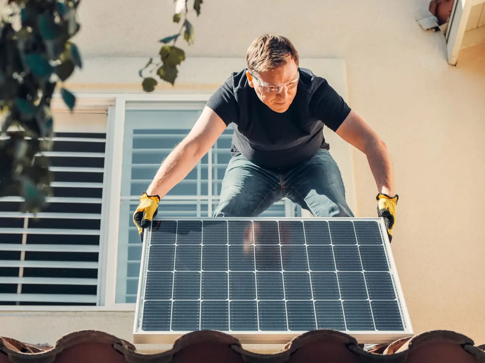
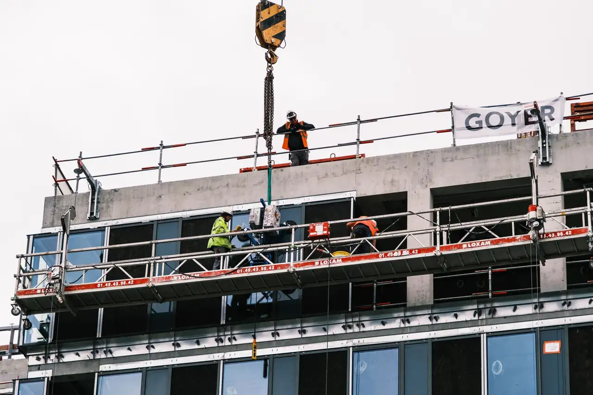

Focused arrival windows
Useful updates and clear arrival timing.

Roofing in South Panama City is essential for maintaining the integrity of your home. Our South Panama City roof contractor services ensure your roof is durable and reliable, providing peace of mind for homeowners in the area.
Useful updates and clear arrival timing.
Review the approach and price before deciding.
Equipped vehicles and respectful cleanup.
Neighbors serving neighbors with follow-through.
Roofing in South Panama City is a vital service that protects homes from the elements. With years of experience, our South Panama City roof contractor team understands the unique challenges posed by the local climate and building styles. We serve neighborhoods like Southside and Southpark, ensuring that every roofing project meets the highest standards of quality and safety. Our commitment to using top materials ensures durability and longevity for every roof we install or repair.

Roofing demand in South Panama City is driven by the area's unique climate and architectural styles. Our team offers a comprehensive range of services, including 24/7 roofing services in South Panama City, ensuring that all your roofing needs are met promptly and professionally.
Roof installation in South Panama City focuses on using durable materials like asphalt shingles and metal sheets, tailored to withstand local weather conditions. We cater to various building types, ensuring a perfect fit for every home.
View service →02When replacing roofs in South Panama City, we prioritize quality materials and adherence to local codes, ensuring long-lasting results. Our team assesses each home to provide the best options for replacement.
View service →03Roof repair services in South Panama City address common issues like leaks and missing shingles. Our experienced contractors quickly diagnose problems and implement effective solutions to restore your roof's integrity.
View service →04Regular roof inspections in South Panama City help identify potential issues before they escalate. Our thorough inspections ensure your roof remains in top condition, providing peace of mind to homeowners.
View service →05Our roof maintenance services in South Panama City are designed to extend the lifespan of your roof. We provide regular checks and necessary repairs to keep your roof in optimal condition year-round.
View service →06Flat roofing services in South Panama City cater to commercial and residential buildings. Our team specializes in installing and repairing flat roofs, ensuring they are watertight and durable.
View service →07Shingle roofing services in South Panama City utilize high-quality materials like GAF and Owens Corning shingles. We ensure proper installation and maintenance to withstand local weather patterns.
View service →08Tile roofing services in South Panama City offer a stylish and durable option for homeowners. We work with various tile materials to provide aesthetic appeal and long-lasting performance.
View service →09Metal roofing services in South Panama City provide energy-efficient and durable solutions. Our team installs metal roofs that are resistant to weather damage and offer long-term savings.
View service →Roofing in South Panama City is executed with a focus on quality and compliance with local codes. Our team uses tools like roofing nailers and safety harnesses to ensure safe and efficient work. The local climate, characterized by high humidity and heavy rainfall, requires specific materials and techniques to ensure durability. We prioritize scheduling flexibility to accommodate homeowners' needs, ensuring minimal disruption during installation or repair.
High humidity can lead to mold and decay of roofing materials if not properly managed. We use moisture-resistant materials and ensure proper ventilation to mitigate these effects.
Storms can lead to missing shingles and structural damage, requiring prompt repairs. Our emergency roofing services ensure quick responses to storm-related issues, minimizing damage.
Strict building codes must be adhered to for safety and compliance. Our team is well-versed in Florida Building Code Compliance, ensuring all work meets legal standards.
This code ensures roofing systems are installed to withstand local weather conditions, promoting safety and durability.
Adhering to NRCA standards guarantees quality workmanship and materials in all roofing projects.
The climate and architectural styles in South Panama City contribute to specific roofing challenges. Homeowners should be aware of these common issues to ensure timely repairs.
Heavy rainfall can overwhelm gutters and lead to leaks, especially in older roofs or those with poor drainage systems. We conduct thorough inspections and recommend appropriate repairs or replacements to ensure your roof can handle local weather.
Extreme heat and humidity can cause shingles to curl and lose effectiveness, leading to potential leaks. We offer regular maintenance and inspections to identify early signs of deterioration and recommend timely replacements.
High humidity levels in South Panama City promote moss growth, which can trap moisture and damage roofing materials. Our cleaning services effectively remove moss and apply treatments to prevent future growth, preserving your roof's integrity.
Improper installation or wear and tear can lead to flashing failures, resulting in leaks. We inspect and repair flashing to ensure a watertight seal, preventing water intrusion into your home.

Roofing pricing in South Panama City varies based on materials and the complexity of the project. Typical 2026 pricing ranges from $180 to $450 per square for installation, depending on the roofing type and any additional services required. Factors such as roof size, material choice, and labor costs can influence the final price. Homeowners should expect to invest in regular maintenance to extend the lifespan of their roofs.
Different materials, such as asphalt shingles or metal, have varying costs. Asphalt shingles are typically more affordable, while metal roofing can be a higher investment.
Larger roofs require more materials and labor, increasing the overall cost. Accurate measurements help provide a precise estimate.
Labor rates can fluctuate based on demand and complexity of the installation. Experienced contractors may charge more, but quality workmanship is guaranteed.
Navigating South Panama City is easy with recognizable landmarks guiding our team. We utilize notable locations for orientation and efficient routing to service calls.
South Bay Park serves as a central point for many residential areas, making it a convenient location for service scheduling.
The Southside Community Center is a hub for local events, allowing us to connect with the community and provide roofing services when needed.
The Panama City Mall is a key landmark that helps us navigate the area efficiently while serving nearby neighborhoods.
Hiland Park is a popular recreational area, and our team often services homes in this vicinity, ensuring quick access for repairs.
Cedar Grove Park is known for its family-friendly environment, and we frequently provide roofing services to homes in this area.
St. Andrews Bay is a significant landmark that helps us navigate service routes and reach customers efficiently.
This area sees high demand for roofing services due to numerous commercial properties requiring regular maintenance and repairs.
The Business Park hosts various enterprises, making commercial roofing services essential for maintaining property values.
Located approximately 15 minutes away, we can easily access the airport for quick service delivery.
Highway 98 provides direct access to various neighborhoods, facilitating efficient travel for our roofing team.
Our roofing services extend to several neighborhoods in South Panama City, ensuring that every community receives top-quality roofing solutions tailored to their specific needs.
Southside features a variety of residential styles, requiring diverse roofing solutions. Our team is familiar with the unique challenges this area presents. Located just minutes from our base, we can respond quickly to service requests.
Southpark is known for its family-friendly atmosphere and diverse housing options, which we cater to with tailored roofing services. We have a strong presence in Southpark, ensuring rapid response times for roofing needs.
South Bay homes often face challenges from weather, making reliable roofing essential. Our expertise helps protect these properties effectively. Our team frequently works in South Bay, allowing for prompt service delivery.
Forest Park's tree coverage can lead to unique roofing challenges, such as debris accumulation, which we address with our maintenance services. We are well-acquainted with the Forest Park area, ensuring efficient service.
Our case studies highlight the challenges faced by homeowners in South Panama City and how we successfully addressed them.
Severe roof leaks after heavy rain. We conducted a thorough inspection and replaced damaged shingles with high-quality GAF materials, ensuring long-term protection. The homeowner reported no leaks during subsequent storms, enhancing their peace of mind.
Missing shingles due to high winds. Our team quickly assessed the damage and provided emergency repairs, replacing missing shingles with durable options. The roof was fully restored within hours, preventing further water damage.
Moss growth on roof affecting aesthetics. We performed a comprehensive roof cleaning and applied a protective coating to prevent future growth. The roof looked brand new, and the homeowner was thrilled with the results.
The climate in South Panama City influences roofing needs throughout the year. Understanding seasonal impacts can help homeowners prepare for necessary maintenance.
Spring brings heavy rains that can expose roofing vulnerabilities. Homeowners should check for leaks and inspect gutters.
Summer's heat can cause roofing materials to expand and contract, potentially leading to cracks or leaks.
Fall is a critical time for roof maintenance, as falling leaves can clog gutters and lead to water buildup.
Winter can bring heavy rains and occasional storms, increasing the risk of roof damage.
Our roofing services extend beyond South Panama City, covering several nearby cities to ensure comprehensive support for all roofing needs.

Just a short drive from South Panama City, we frequently service homes in St. Andrews.
Local coverage and details
Downtown Panama City is a bustling area where we provide a range of roofing services to both residential and commercial properties.
Local coverage and details
Millville is nearby, and our team often travels there to assist with roofing repairs and installations.
Local coverage and details
Downtown North is a growing area where we are expanding our roofing services to meet increasing demand.
Local coverage and detailsWhen hiring a roofing contractor, asking the right questions can help you gauge their expertise and reliability. Here are key inquiries to consider.
Verification of licensing and insurance protects you from liability and ensures the contractor meets industry standards.
Understanding the materials used helps you assess durability and suitability for your specific roofing needs.
A solid warranty indicates the contractor's confidence in their work and materials, providing you with peace of mind.
Lic. #C123456
Lic. #G654321
GAF
CertainTeed
$2M general liability
Member
Sponsor
The best roofing services in South Panama City include roof installation, repair, and maintenance tailored to local conditions and materials.
Roofing costs in South Panama City typically range from $180 to $450 per square, depending on materials and project complexity.
Look for a licensed, insured contractor with positive reviews and experience in local roofing challenges and materials.
Schedule a roof inspection at least once a year or after severe weather events to identify potential issues early.
Regular maintenance includes cleaning gutters, inspecting for damage, and scheduling professional inspections to ensure longevity.
Not seeing your question? Our local team can help you understand urgency, scheduling and what to expect.
Ask the local team
We invite you to reach out for any roofing needs. Our team is available to assist you promptly, ensuring a quick response.